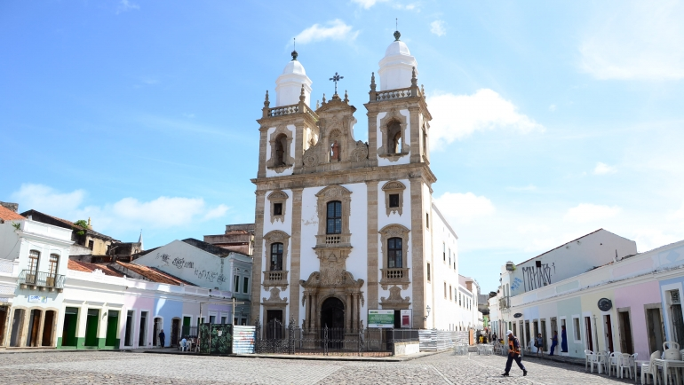

Igreja de São Pedro dos Clérigos
A Igreja de São Pedro dos Clérigos é um dos marcos arquitetônicos mais importantes do Recife Antigo. Fundada em 1724, sua arquitetura barroca e seus detalhes ornamentais a tornam um local de visita obrigatória para quem deseja conhecer a história religiosa e cultural da cidade.
Centro Cultural Judaico

O Centro Cultural Judaico oferece uma visão profunda da rica história e cultura da comunidade judaica no Recife. Localizado no Recife Antigo, o centro exibe exposições, artefatos e documentos que ilustram a contribuição significativa dos judeus para a cidade e para o Brasil.